การเขียนโปรแกรมภาษา C สำหรับ AVR (ATmega328P): ตอนที่ 7#
Keywords: Atmel AVR MCU, ATmega328P, Bare-metal C Programming, AVR-GCC, avr-libc
- การเขียนโปรแกรมภาษา C แบบ Bare-Metal และการใช้ไลบรารี avr-libc
- วงจรตัวนับ Timer/Counter1
- การใช้งาน Timer/Counter1: Normal Mode (Mode 0)
- การใช้งาน Timer/Counter1: Normal Mode with Counter Reload
- การใช้งาน Timer/Counter1: CTC Mode
▷ การเขียนโปรแกรมภาษา C แบบ Bare-Metal และการใช้ไลบรารี avr-libc#
บทความในตอนที่ 7 สาธิตตัวอย่างการเขียนโค้ดภาษา C เพื่อใช้งานวงจรที่เรียกว่า Timer/Counter1 (วงจรตัวนับหมายเลข 1) ภายในชิป ATmega328P ซึ่งมีหลายโหมดการทำงานให้เลือกใช้ มีการใช้คำสั่งหรือฟังก์ชันของไลบรารี avr-libc (Online User Manual) และใช้ Wokwi Simulator ในการจำลองการทำงานของโค้ดเพื่อตรวจสอบความถูกต้องในเบื้องต้น
▷ วงจรตัวนับ Timer/Counter1#
วงจร Timer/Counter1 ภายในชิป ATmega328P เป็นวงจรตัวนับขนาด 16 บิต มีวงจรเปรียบเทียบค่าของตัวนับสำหรับสร้างสัญญาณเอาต์พุต จำนวน 2 ชุด (Output Compare Units: OC1A / OC1B) ซึ่งสามารถนำมาใช้ในการสร้างสัญญาณพัลส์ที่มีคาบคงที่ หรือสัญญาณแบบ PWM (Pulse Width Modulation) ได้ นอกจากนั้นแล้วยังมีวงจรรับสัญญาณอินพุตเพื่อตรวจจับการเปลี่ยนแปลงของสัญญาณดิจิทัล (Input Capture Unit) และนำมาใช้ในการนับขึ้นของวงจรตัวนับ (Counter) ได้เช่นกัน
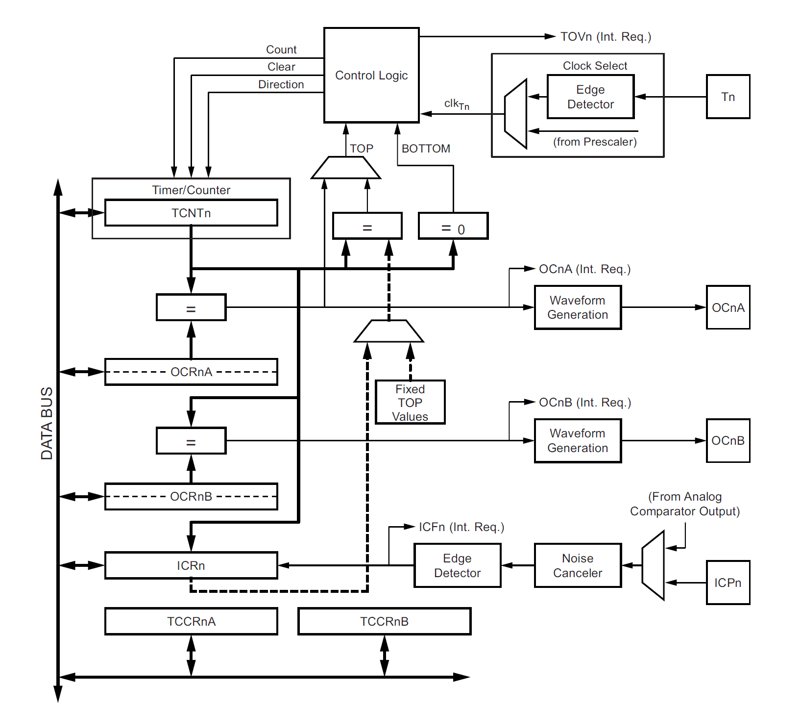
รูป: บล็อกไดอะแกรมของวงจร Timer/Counter1

รูป: รีจิสเตอร์ของวงจร Timer/Counter1
รายละเอียดเกี่ยวกับรีจิสเตอร์ที่เกี่ยวข้องกับการทำงานของ Timer/Counter1 สามารถดูได้เอกสารของผู้ผลิต ATmega328P Datasheet
TCNT1รีจิสเตอร์ตัวนับขนาด 16 บิต ประกอบด้วยรีจิสเตอร์ขนาด 8 บิต คือTCNT1HและTCNT1Lดังนั้นค่าต่ำสุดและสูงสุดของตัวนับที่เป็นไปได้คือ0x0000(BOTTOM) และ0xFFFF(MAX)TCCR1A(Timer/Counter1 Control Register A)COM1A[1:0](Compare Output Mode for Channel A)COM1B[1:0](Compare Output Mode for Channel B)WGM1[1:0](Waveform Generation Mode)
TCCR1B(Timer/Counter1 Control Register B)ICNC1(Input Capture Noise Canceler)ICES1(Input Capture Edge Select)WGM1[3:2](Waveform Generation Mode)CS1[2:0](Clock Select)
TCCR1C(Timer/Counter1 Control Register C)FOC1A(Force Output Compare for Channel A)FOC1B(Force Output Compare for Channel B)
OCR1A(Output Compare Register 1 A) รีจิสเตอร์ขนาด 16 บิต- ประกอบด้วยรีจิสเตอร์ขนาด 8 บิต
OCR1AHและOCR1AL - ใช้สำหรับเปรียบเทียบกับค่าของ
TCNT1เพื่อสร้างสัญญาณเอาต์พุต OC1A
- ประกอบด้วยรีจิสเตอร์ขนาด 8 บิต
OCR1B(Output Compare Register 1 B) รีจิสเตอร์ขนาด 16 บิต- ประกอบด้วยรีจิสเตอร์ขนาด 8 บิต
OCR1BHและOCR1BL - ใช้สำหรับเปรียบเทียบกับค่าของ
TCNT1เพื่อสร้างสัญญาณเอาต์พุต OC1B
- ประกอบด้วยรีจิสเตอร์ขนาด 8 บิต
TIMSK1(Timer/Counter1 Interrupt Mask Register) ใช้สำหรับการเปิดหรือปิดการทำงานของอินเทอร์รัพท์สำหรับวงจรนี้OCIE1A(Timer/Counter1, Output Compare A Match Interrupt Enable)OCIE1B(Timer/Counter1, Output Compare B Match Interrupt Enable)TOIE1(Timer/Counter1, Overflow Interrupt Enable)ICIE1(Timer/Counter1, Input Capture Interrupt Enable)
TIFR1(Timer/Counter1 Interrupt Flag Register) มีบิตที่แสดงแสดงการเกิดอินเทอร์รัพท์ และสถานะการเปรียบเทียบค่าของตัวนับTCNT1กับรีจิสเตอร์OCR1AและOCRA1B(Output Compare A / B Match) เป็นต้นTOV1(Timer/Counter1, Overflow Flag)OCF1A(Timer/Counter1, Output Compare A Match Flag)OCF1B(Timer/Counter1, Output Compare B Match Flag)ICF1(Timer/Counter1, Input Capture Flag)
ในการใช้งาน Timer/Counter1 จะเริ่มต้นด้วยการเลือกโหมดการสร้างสัญญาณ
(Waveform Generation Mode: WGM) ซึ่งมีอยู่หลายโหมด ตามตารางต่อไปนี้
แล้วกำหนดค่าบิตสำหรับ WGM1[3:0] จำนวน 4 บิต ให้ถูกต้อง
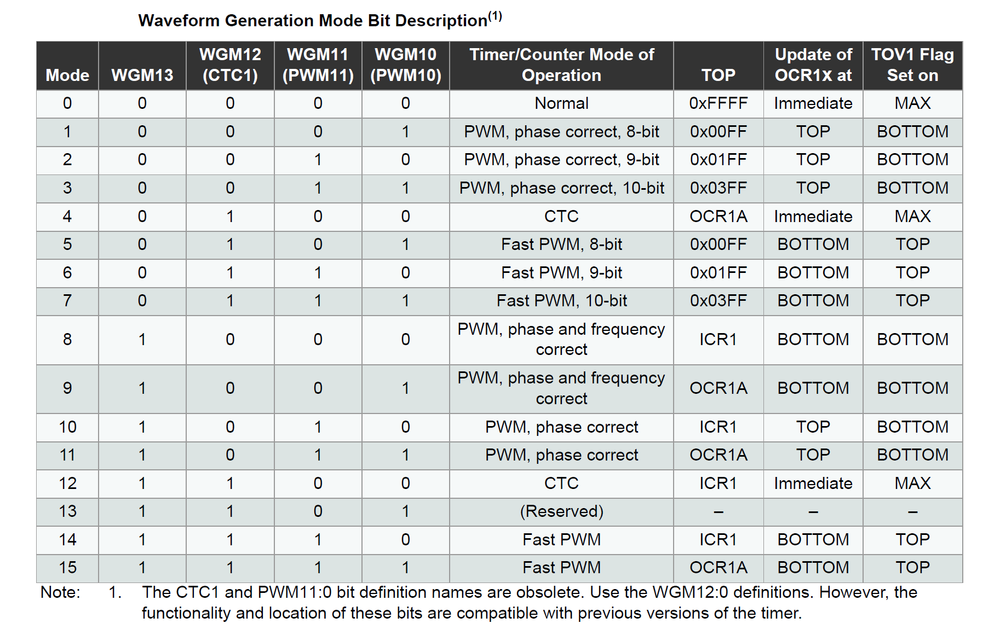
รูป: ตัวเลือกสำหรับโหมดการสร้างสัญญาณของวงจร Timer/Counter1 โหมดหมายเลข 0 - 15
ถัดไปเป็นการตั้งค่าตัวหารความถี่ของสัญญาณ f_CPU (หรือ เลือกสัญญาณจากภายนอก) ซึ่งจะต้องเลือกจากรายการตัวเลขที่มีการกำหนดไว้
แล้วกำหนดค่าบิตให้กับ CS1[2:0] ในรีจิสเตอร์ TCCR1B
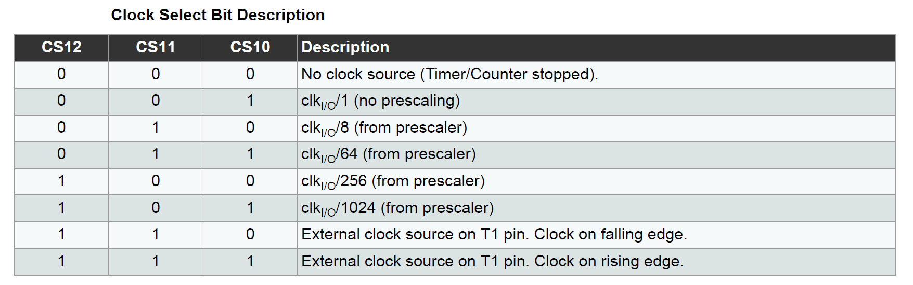
รูป: ตัวเลือกสำหรับการเลือกตัวหารความถี่สำหรับวงจร Timer/Counter1
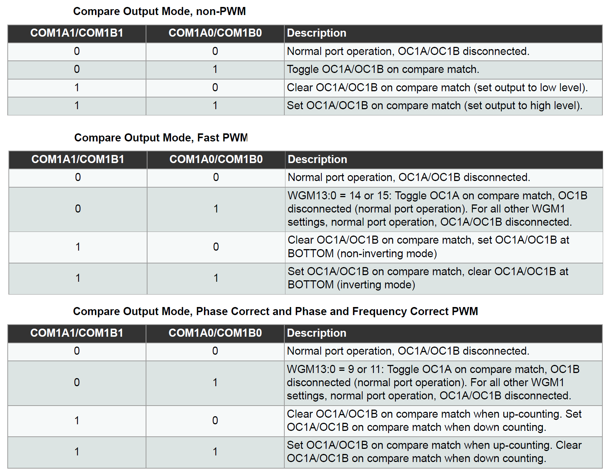
รูป: ตัวเลือกสำหรับบิต COM1A[1:0] และ COM1B[1:0] จำแนกตามโหมดที่จะใช้งาน
▷ Timer/Counter1: Normal Mode (Mode 0)#
โค้ดนี้สาธิตการทำงานของวงจร Timer/Counter1 ในโหมด 0 (Normal Mode)
ในโหมดนี้ ค่าของตัวนับ TCNT1 จะนับขึ้นจาก 0x000 ถึงค่าสูงสุด 0xFFFF (65535) แล้วเริ่มต้นนับใหม่ สามารถตั้งค่าให้เกิดอินเทอร์รัพท์ที่เรียกว่า
Overflow Interrupt ได้
ในตัวอย่างนี้ ได้ตั้งค่าตัวหารความถี่เท่ากับ 1 ดังนั้นวงจรตัวนับจะนับขึ้นด้วยอัตรา 16MHz และจะเกิดอินเทอร์รัพท์ ทุก ๆ 65536/16MHz = 4.096 msec
เมื่อนับครบหนึ่งรอบแล้วเกิดเหตุการณ์อินเทอร์รัพท์ ที่มีชื่อว่า TIMER1_OVF_vect (Timer1 Overflow Interrupt)
จะมีการเรียกใช้ฟังก์ชัน ISR(TIMER1_OVF_vect)
ทำให้มีการสลับสถานะลอจิกที่ขา PB1 / OC1A Pin (LED_PIN) หรือ Arduino D9 Pin
#include <avr/io.h>
#include <avr/interrupt.h>
#define LED_PIN (PB1)
#define PRESCALER (64) // Use 1, 8 or 64
ISR(TIMER1_OVF_vect) {
PORTB ^= (1 << LED_PIN); // Toggle the LED pin
}
void initTimer1() {
TCCR1A = 0;
TCNT1 = 0x000;
#if PRESCALER == 64
TCCR1B = (1<<CS11) | (1<<CS10); // Set prescaler to 64 (CS[2:0]="011")
#elif PRESCALER == 8
TCCR1B = (1<<CS11); // Set prescaler to 8 (CS[2:0]="010")
#else
TCCR1B = (1<<CS10); // Set prescaler to 1 (CS[2:0]="001")
#endif
TIFR1 |= (1<<TOV1); // Clear Timer1 overflow flag
TIMSK1 |= (1<<TOIE1); // Enable Timer1 overflow interrupt
}
int main() {
DDRB |= (1 << LED_PIN); // Set LED pin as output
initTimer1(); // Initialize Timer1
sei(); // Enable global interrupts
while (1) {}
return 0;
}
ข้อสังเกต: ในโค้ดตัวอย่างนี้ ให้เปลี่ยนไปใช้ขา PB5 / D13 Pin แทนที่ PB1 / D9 Pin ถ้าต้องการใช้ LED บนบอร์ด Arduino Uno / Nano
ในเชิงทฤษฎี การคำนวณระยะเวลาในการเกิดอินเทอร์รัพท์ TIMER1_OVF_vect
และเกิดการสลับสถานะลอจิกที่ขาเอาต์พุต สามารถคำนวณได้ดังนี้
- ตัวหารความถี่ /1: อัตราการเกิดอินเทอร์รัพท์ 1/(16MHz/1/65536) หรือได้ช่วงเวลาเท่ากับ 4.096 msec
- ตัวหารความถี่ /8: อัตราการเกิดอินเทอร์รัพท์ 1/(16MHz/8/65536) หรือได้ช่วงเวลาเท่ากับ 32.768 msec
- ตัวหารความถี่ /64: อัตราการเกิดอินเทอร์รัพท์ 1/(16MHz/64/65536) หรือได้ช่วงเวลาเท่ากับ 262.144 msec
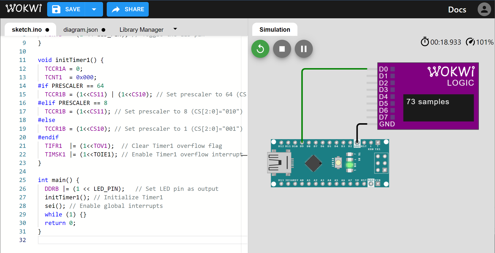
รูป: การจำลองการทำงานของโค้ดด้วย Wokwi Simulator และวัดสัญญาณด้วย Virtual Logic Analyzer
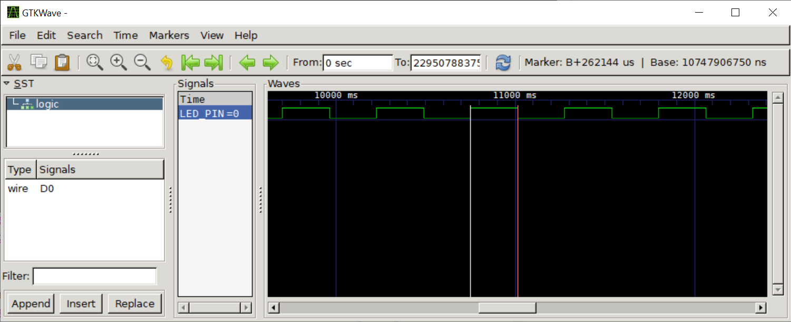
รูป: การแสดงรูปคลื่นสัญญาณที่บันทึกได้จาก Virtual Logic Analyzer โดยใช้โปรแกรม GTKWave (วัดความกว้างของพัลส์ได้ 262.144 msec สำหรับตัวหารความถี่ /64)
ลองมาดูตัวอย่างการวัดสัญญาณจริง โดยใช้ USB Logic Analyzer วัดสัญญาณที่ขา PB1 / D9 ของบอร์ด Arduino Nano
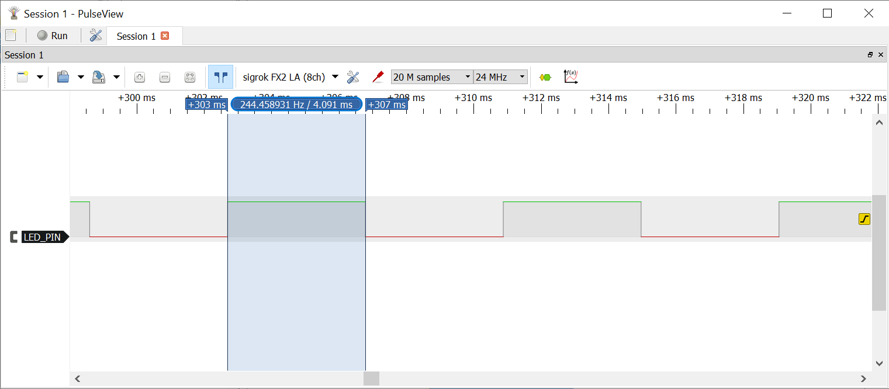
รูป: การวัดความกว้างของพัลส์สำหรับตัวหารความถี่ /1 (วัดค่าได้ประมาณ 4.091 msec)
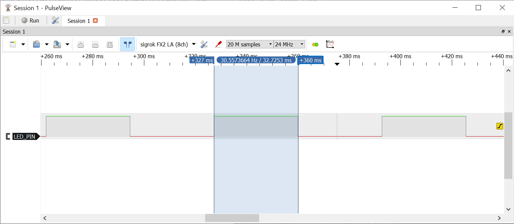
รูป: การวัดความกว้างของพัลส์สำหรับตัวหารความถี่ /8 (วัดค่าได้ประมาณ 32.725 msec)
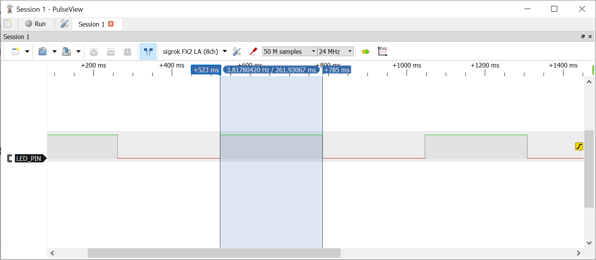
รูป: การวัดความกว้างของพัลส์สำหรับตัวหารความถี่ /64 (วัดค่าได้ประมาณ 261.931 msec)
▷ Timer/Counter1: Normal Mode with Counter Reload#
การเลือกตัวหารความถี่ จะส่งผลต่อระยะเวลาในการนับในแต่ละรอบของรีจิสเตอร์ TCNT1 แต่ยังมีอีกวิธีหนึ่ง
คือ การกำหนดค่าเริ่มต้นให้รีจิสเตอร์ TCNT1 เมื่อเกิดอินเทอร์รัพท์แต่ละครั้ง
แทนที่จะให้เริ่มนับที่ 0 ไปจนถึง 65535 (0xFFFF) แต่เริ่มต้นด้วยค่ามากกว่า 0
ในตัวอย่างนี้ สาธิตการใช้งานวงจร Timer1 ในโหมด Normal
เลือกตัวหารความถี่เท่ากับ /64
และมีการกำหนดค่าเริ่มต้นในการนับให้รีจิสเตอร์ TCNT1 เพื่อต้องการให้มีการนับในแต่ละรอบเท่ากับ
50000 ดังนั้นจึงให้เริ่มนับที่ค่า (65535-50000) = 15535 หรือ ไปจนถึง 65535
ดังนั้นในกรณีนี้ จะมีระยะเวลาในการเกิดอินเทอร์รัพท์แต่ละครั้งเท่ากับ 1/(16MHz/64/50000) หรือ 200 msec
#include <avr/io.h>
#include <avr/interrupt.h>
#define LED_PIN (PB1)
#define LOAD_VALUE (65535-50000) // 16-bit initial count value
// 16MHz/64/50000 = 5Hz (interrupt rate) or time interval = 200 msec
// ISR for Timer1 overflow interrupt
ISR(TIMER1_OVF_vect) {
TCNT1 = LOAD_VALUE; // Load the initial count value
PORTB ^= (1<<LED_PIN); // Toggle the LED pin
}
void initTimer1() {
TCCR1A = TCCR1B = 0;
TCNT1 = LOAD_VALUE; // Load the initial count value
// Configure Timer1 in Normal mode with prescaler of 64
TCCR1B = (1<<CS11) | (1<<CS10); // CS[2:0] = "011" (clk/64)
TCNT1 = 0x000; // Reset Timer1 count register
TIFR1 |= (1<<TOV1); // Clear Timer1 overflow flag
TIMSK1 |= (1<<TOIE1); // Enable Timer1 overflow interrupt
}
int main() {
DDRB |= (1<<LED_PIN); // Set LED pin as output
initTimer1(); // Initialize Timer1
sei(); // Enable global interrupts
while(1) {}
return 0;
}
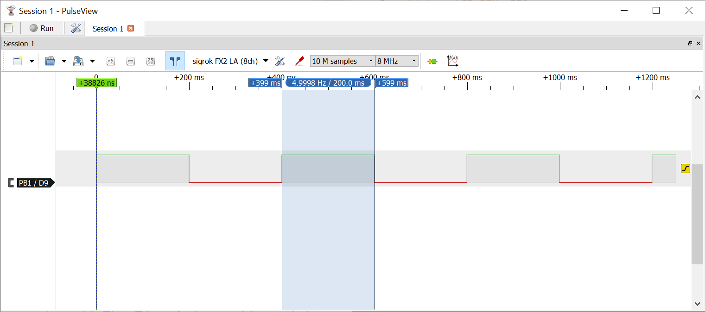
รูป: การวัดความกว้างของพัลส์ได้ประมาณ 200 msec
▷ Timer/Counter1: CTC Mode#
ตัวอย่างนี้สาธิตการใช้งานในโหมด CTC (Clear Timer on Compare Match)
ซึ่งแตกต่างจากโหมด Normal โดยที่จะมีการนับขึ้นจาก 0 และนับไปจนถึงค่าของ
รีจิสเตอร์ OC1RA สำหรับการเปรียบเทียบ เมื่อมีค่าเท่ากัน รีจิสเตอร์ TCNT1
จะถูกรีเซตให้เป็น 0 และเริ่มต้นนับใหม่
นอกจากนั้นแล้วยังมีการเปิดใช้งานอินเทอร์รัพท์
TIMER1_COMPA_vect (Timer1 compare match A Interrupt)
สำหรับเหตุการณ์นี้ด้วย เพื่อให้ฟังก์ชัน ISR(TIMER1_COMPA_vect) ทำงาน
โดยสลับสถานะลอจิกที่ขา PB1
#include <avr/io.h>
#include <avr/interrupt.h>
#define LED_PIN (PB1) // LED pin
#define PRESCALER (64) // Define prescaler value as 64
#define RATE_HZ (1000UL) // Toggle rate in Hz
#define COMP_VALUE (F_CPU/(RATE_HZ * PRESCALER))
// 16MHz/64/250 = 1000 Hz (toggle rate) or time interval of 1 ms
// ISR for Timer1 compare match A
ISR(TIMER1_COMPA_vect) {
PORTB ^= (1<<LED_PIN); // Toggle the LED pin
}
void initTimer1() {
TCCR1A = TCCR1B = 0;
TCNT1 = 0x000;
OCR1A = (uint16_t)(COMP_VALUE-1); // Set compare match value
// Configure Timer1 in CTC mode (mode 4) with prescaler of 64
TCCR1B |= (1<<WGM12) | (1<<CS11) | (1<<CS10); // CTC mode, prescaler /64
TIMSK1 |= (1<<OCIE1A); // Enable interrupt on compare match A
}
int main(void) {
// Set the Data Direction Register (DDR) of Port B
DDRB |= (1<<LED_PIN); // Use LED as output
initTimer1(); // Initialize Timer1
sei(); // Enable global interrupts
while (1) {}
return 0;
}
เมื่อเลือกโหมด CTC ก็สามารถสร้างสัญญาณพัลส์ หรือ PWM ที่มีค่า Duty Cycle 50% ได้ เป็นสัญญาณคาบ (Periodic Signal) แต่จะต้องใช้ขาเอาต์พุต PB1 / OC1A เท่านั้น โดยไม่ต้องเปิดใช้งานอินเทอร์รัพท์ และจะสร้างสัญญาณคาบได้เช่นกัน
เมื่อตัวนับ TCNT1 มีนับขึ้นจนได้ค่าเท่ากับ OC1R1A จะทำให้มีการสลับสถานะลอจิกของขา
PB1/OC1A โดยอัตโนมัติ
(Toggle OC1A on Compare Match / Non-PWM Mode)
เนื่องจากมีการตั้งค่าบิต COM1A[1:0] เป็น "01"
#include <avr/io.h>
#define PWM_PIN (PB1) // Use the PB1/OCR1A pin
#define PRESCALER (64) // Define prescaler value as 64
#define RATE_HZ (1000UL) // Define the toggle rate as 1000 Hz
#define COMP_VALUE (F_CPU/(RATE_HZ * PRESCALER))
void initTimer1() {
TCCR1A = TCCR1B = 0;
TCNT1 = 0x0000;
OCR1A = (uint16_t)(COMP_VALUE-1); // Set compare match value
// Configure Timer1 in CTC mode (mode 4) with prescaler of 64
TCCR1A |= (1<<COM1A0); // Toggle the OC1A pin on compare match A
TCCR1B |= (1<<WGM12) | (1<<CS11) | (1<<CS10);
}
int main(void) {
// Set the DDR for OC1A pin as output
DDRB |= (1 << PWM_PIN); // Use PWM_PIN as output
initTimer1(); // Initialize Timer1
while (1) {}
}
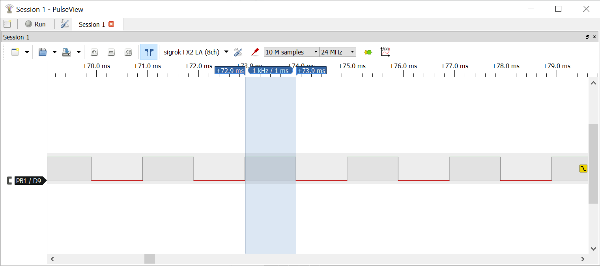
รูป: การวัดความกว้างของพัลส์ได้ค่าประมาณ 1 msec
▷ กล่าวสรุป#
บทความนี้ได้นำเสนอตัวอย่างการเขียนโค้ดภาษาซีสำหรับ ATmega328P เพื่อใช้งานวงจร Timer/Counter1 ซึ่งมีโหมดการทำงานให้เลือกใช้แตกต่างกัน เช่น การนับตามจังหวะเวลาที่กำหนด การสร้างอินเทอร์รัพท์จากการนับตามช่วงเวลาที่กำหนด และการสร้างสัญญาณพัลส์เป็นสัญญาณคาบ เป็นต้น
This work is licensed under a Creative Commons Attribution-ShareAlike 4.0 International License.
Created: 2023-05-04 | Last Updated: 2023-05-06